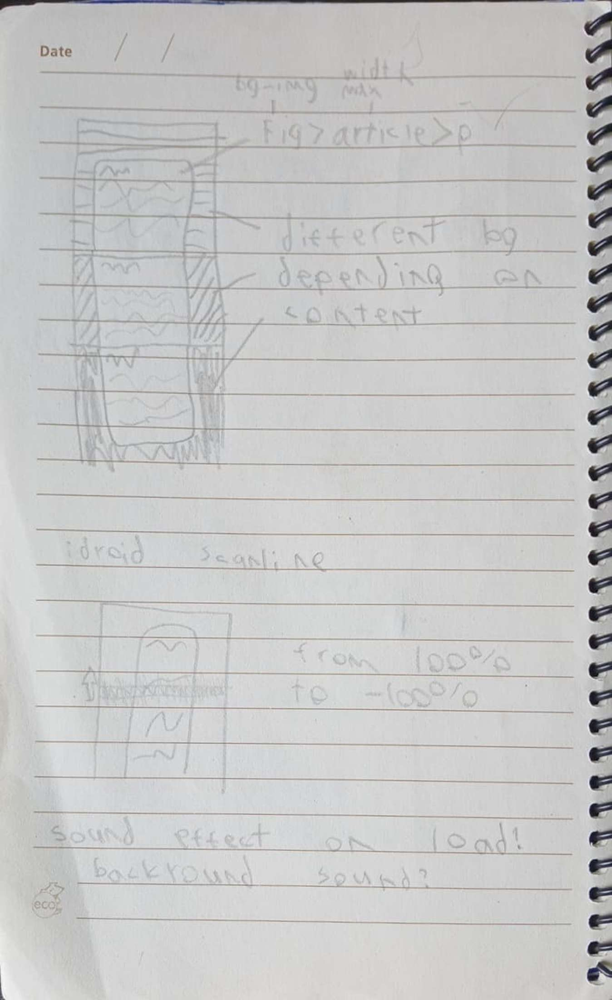

i started out with a little sketch for some visual elements to compliment the article. At first i thought that i would talk about multiple metal hear games, but realized i didn't have the time to write it all. After that i thought to use different backgrounds for the chapters, but found that taking inspiration from the idroid menu would be more simple and less distracting

i originally wanted to fully lean into the idroid menu, ising the font and as many assets from it as i could find. but instead i found that there is no publically abalible decompiilation of mgsv or the idroid menu. The fant was also displayed in raster graphics and i could not find the original or a substitution, so it's possible the font was made in house at konami.